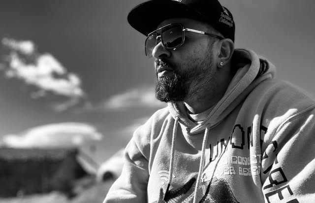
Brasil · @muller.tattooink
Douglas
«Mi experiencia y trayectoria me permiten prestar atención en cada detalle, acompañarte en todo el proceso, desde que llegas con tu idea, el moldearla y hacerla realidad en tu piel.»
Brasil+Uruguay
Dos amigos, un estudio, mucho arte.
Estudio de tatuajes en Lloret de Mar. Douglas, de Brasil, y Sebastián, de Uruguay, convierten tu idea en un tatuaje que vas a querer enseñar.
Pinta el muro
Mantén pulsado y mueve la máquina para pintar
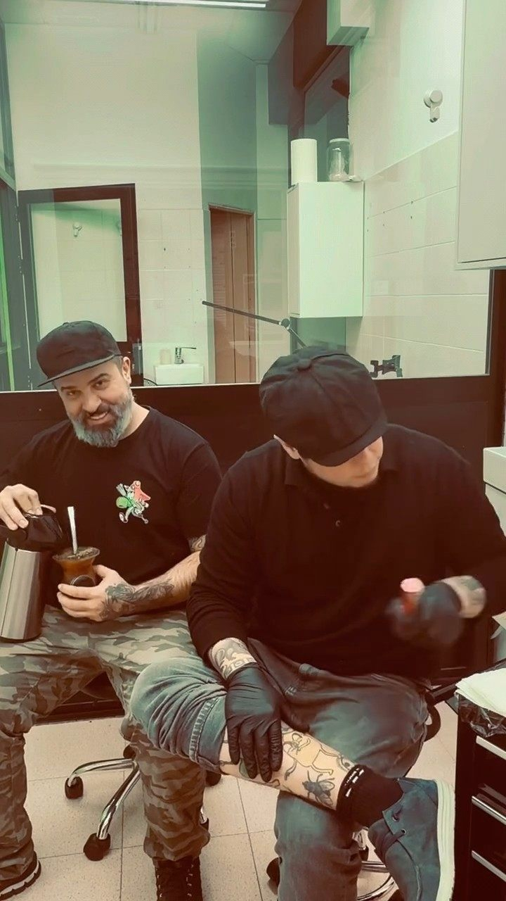
BrUy es la unión de dos amigos y dos países: BR de Brasil y UY de Uruguay. Te acompañan en todo el proceso, desde que llegas con tu idea hasta que la ves en tu piel, y se adaptan a lo que buscas con varios diseños y medidas.

Brasil · @muller.tattooink
«Mi experiencia y trayectoria me permiten prestar atención en cada detalle, acompañarte en todo el proceso, desde que llegas con tu idea, el moldearla y hacerla realidad en tu piel.»
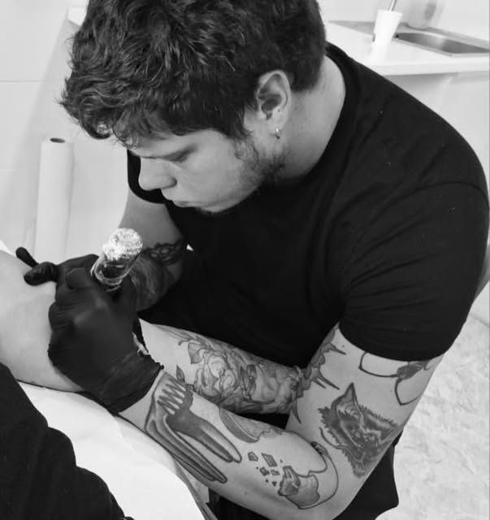
Uruguay · @oink_tatuajes
«Con una trayectoria marcada por la pasión hacia el dibujo y la pintura, y tomando el compromiso de transformar tu idea en trazos inolvidables aquí en Lloret de Mar.»
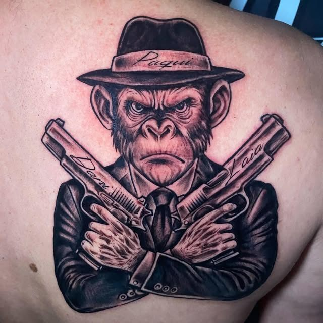
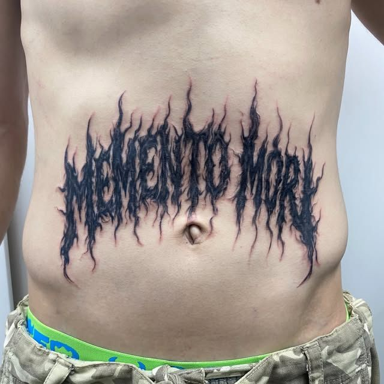
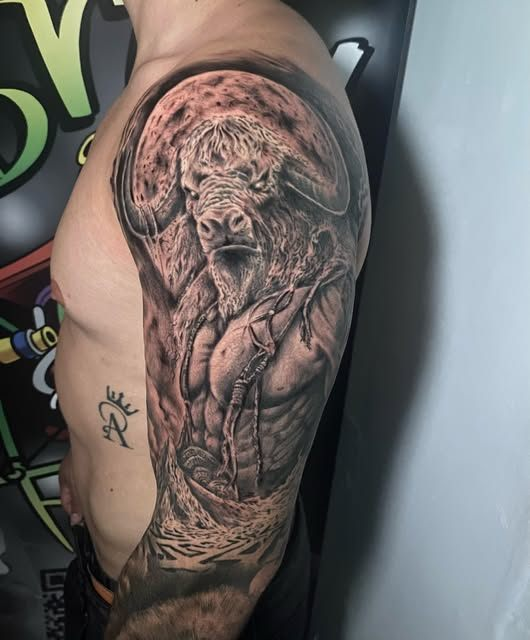
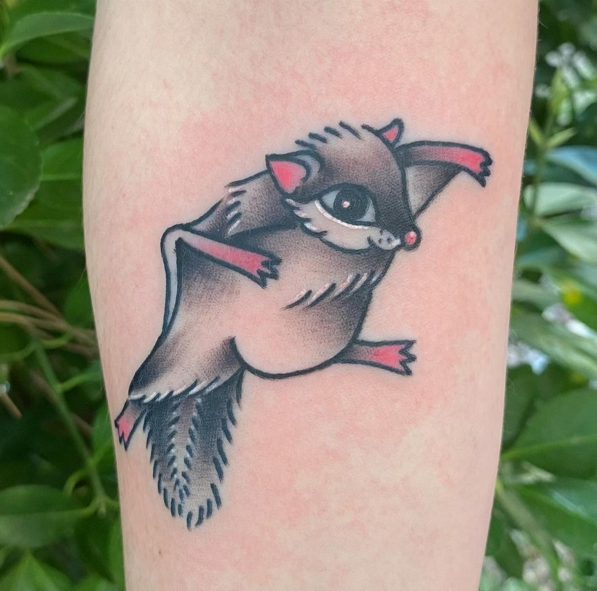
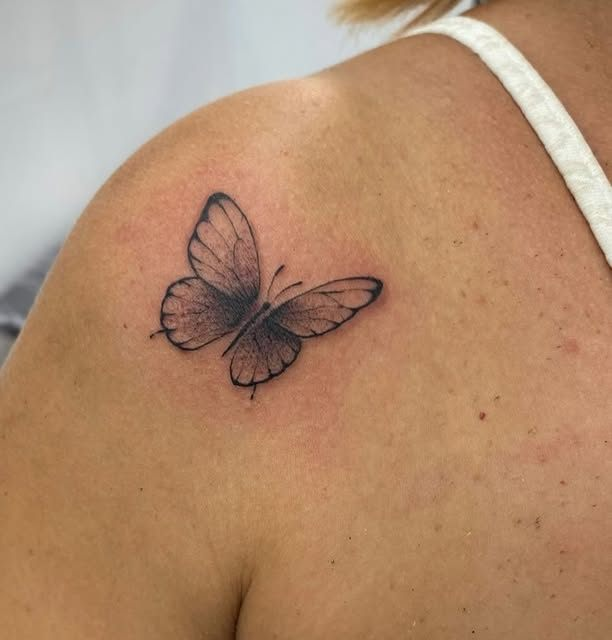
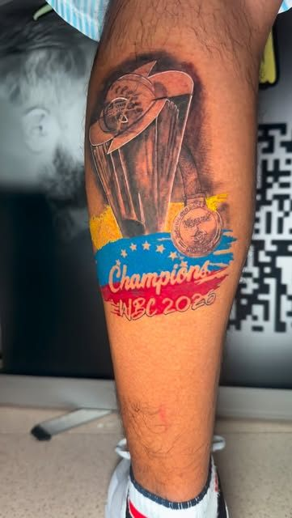
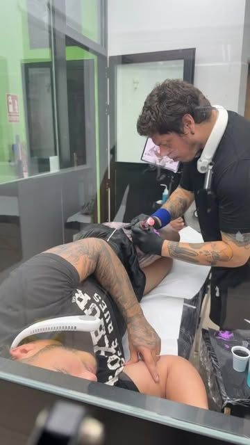
Por WhatsApp o mensaje directo en Instagram: qué quieres, zona y tamaño. Te pasamos presupuesto.
Te proponemos diseños y medidas hasta dar con el tuyo.
Espacio limpio y ordenado, buen ambiente y cuidados posteriores explicados.
«Desde la atención hasta el cuidado en cada trazo, se nota que los profesionales aquí realmente aman lo que hacen. El ambiente es limpio, acogedor y transmite mucha confianza.»
Renato · Google
«Muy profesionales. Se adaptaron muy amables a la idea de tatuaje que llevaba, haciendo varios diseños y medidas.»
Laura · Google
«Genios totales. Alto estilo, buen trato y sobre todo pasión por el tatuaje, profesionalidad y mucho talento.»
Leonardo · Google
«100x100 recomendable, muy buena atención y muy buenas piezas!!»
Google
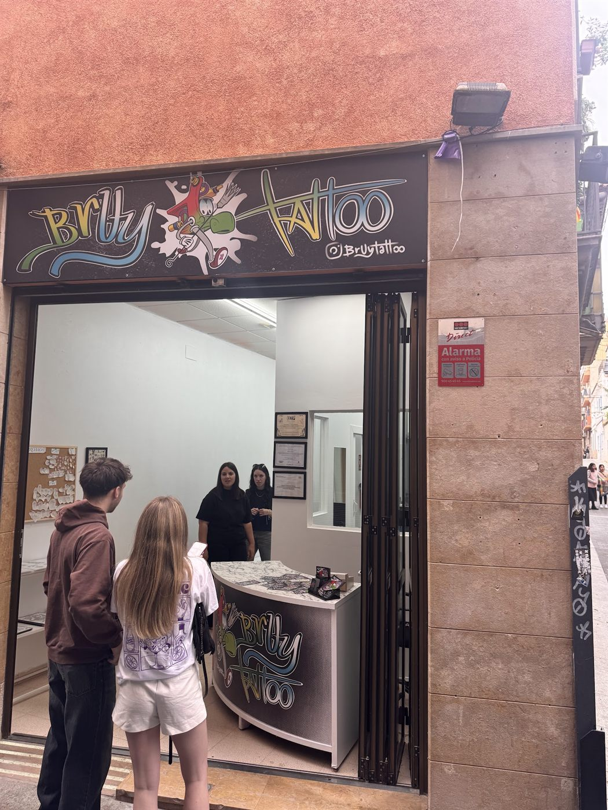